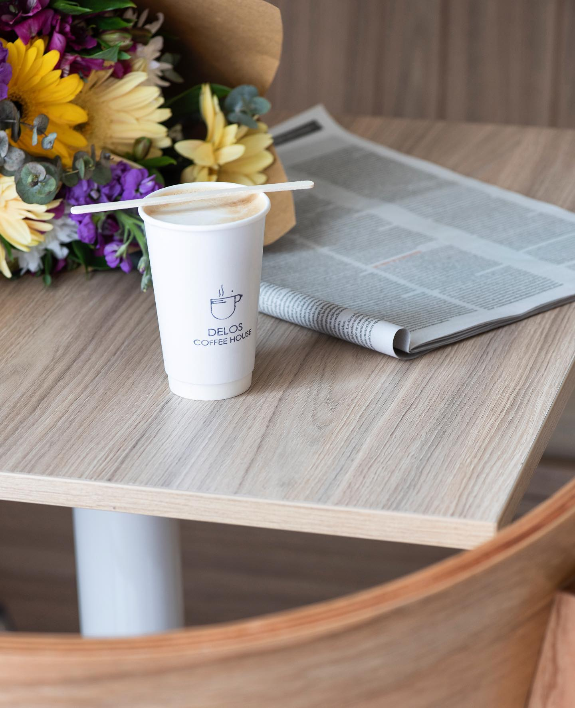

Dirección
Gral. Bartolomé Mitre 132, Tigre (B1648), Provincia de Buenos Aires, Argentina.
Ver en Google MapsTe esperamos en Delos Coffee House, a metros del Puerto de Frutos de Tigre. Escribinos o visitanos cuando quieras.

Gral. Bartolomé Mitre 132, Tigre (B1648), Provincia de Buenos Aires, Argentina.
Ver en Google MapsTodos los días de 9:30 a 20:00 hs.